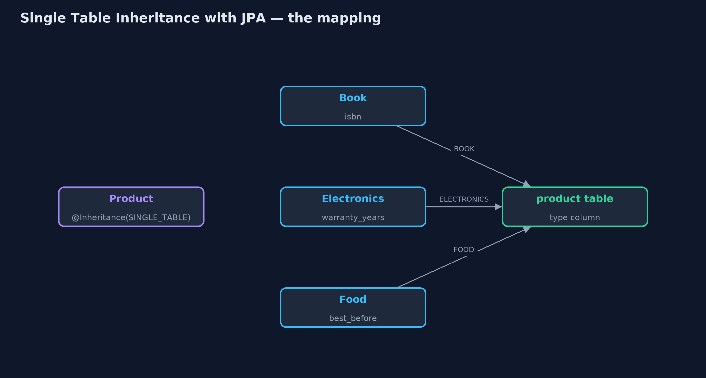
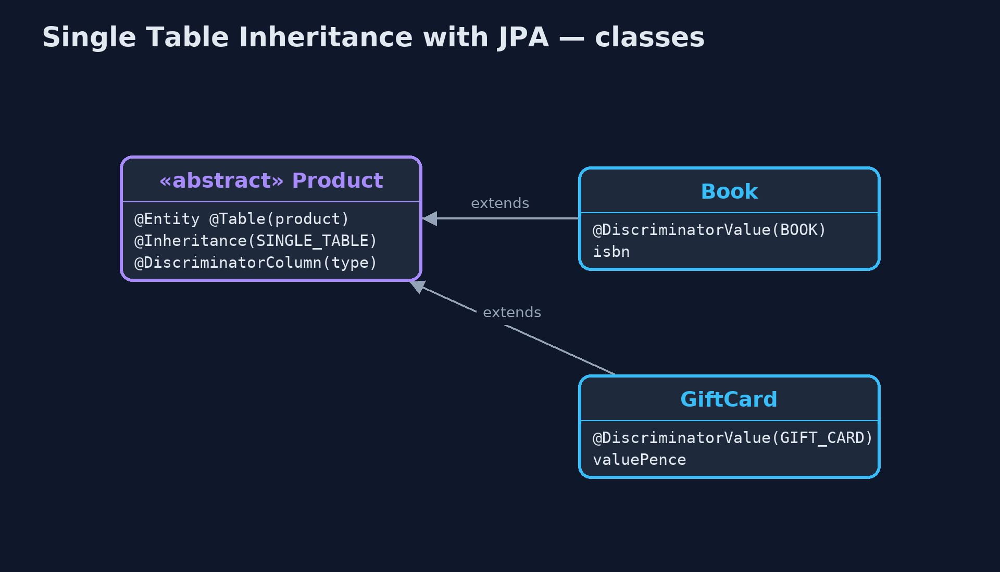
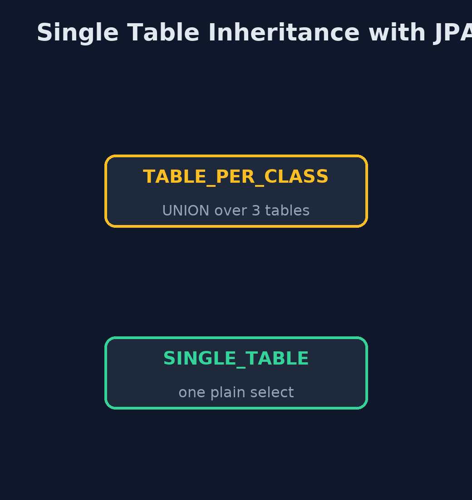
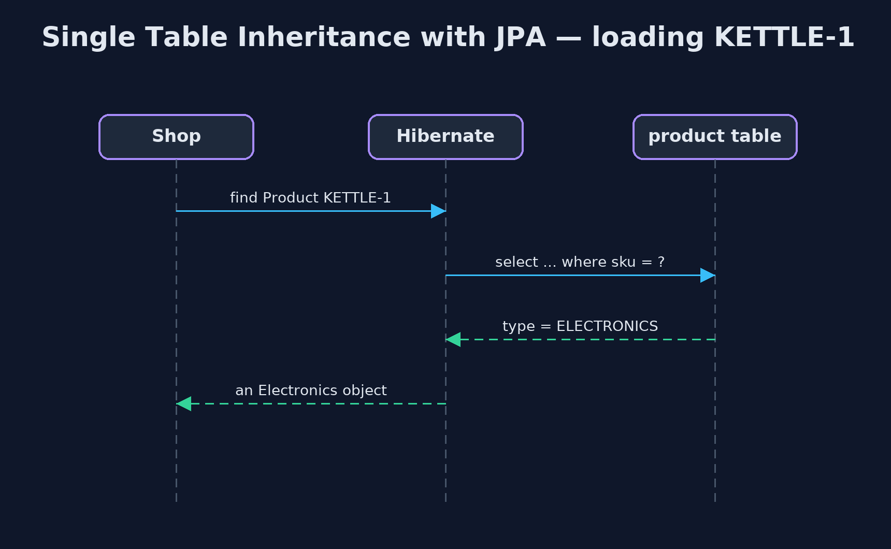

Single Table Inheritance with JPA Pattern
src/main/java/com/jk/explore/stijpa/
├── JpaSingleTableDemo.java The five acts, with JPA annotations and the SQL Hibernate writes for them
├── ShopApp.java The Spring Boot application: an in-memory H2 database and Hibernate, with no web server
├── SqlLog.java Hibernate hands every SQL statement it is about to send to this class first, so the demo can show exactly what JPA's annotations turned into
├── perclass/BookItem.java Its own table, with its own copy of the shared columns
├── perclass/CatalogItem.java Before: the same products with a table for every class (JPA's TABLE_PER_CLASS strategy)
├── perclass/ElectronicsItem.java Its own table, with its own copy of the shared columns
├── perclass/FoodItem.java Its own table, with its own copy of the shared columns
├── single/Book.java A product row whose type column says BOOK
├── single/Electronics.java A product row whose type column says ELECTRONICS
├── single/Food.java A product row whose type column says FOOD
├── single/GiftCard.java A product row whose type column says GIFT_CARD
└── single/Product.java The pattern: every kind of product in one table, called productMap the shop's product classes to one table with JPA's @Inheritance(SINGLE_TABLE), let Hibernate write the SQL and pick each row's class from a type column, and compare the SQL with a table per class.
This is the framework version of the Single Table Inheritance pattern. The plain Java version, a separate project in this category, writes the SQL and the type column by hand. Here JPA, the Java standard for mapping classes to tables, does it with one annotation, and Hibernate, the JPA implementation Spring Boot uses, writes the SQL. The database is an in-memory H2, so nothing has to be installed.
@Inheritance(strategy = SINGLE_TABLE) puts every product class in one table, with a type column that Hibernate fills in on save and reads on load to build the right class. The demo captures the SQL Hibernate actually sends, to compare it with JPA's table-per-class strategy.
The idea in everyday terms
Think of a shop's single stock book with a column for each kind of detail: ISBN for books, warranty for electronics, best-before date for food. Every item gets one line, with a word at the start saying what kind it is, and the columns that do not apply are left blank.
The scenario
The online store sells books, electronics and food, each with its own details. With a table for each kind, the question "everything under £10" had to search every table, and each new kind of product made every such question bigger.
Run
Nothing to install beyond a Java 21 JDK: Spring Boot, Hibernate and an in-memory H2 database all run inside the program.
./gradlew runThe demo tells the story in 5 acts, each printing exact numbers that the tests check:
| Act | What it shows |
|---|---|
| 1. A table per class | With @Inheritance(TABLE_PER_CLASS), everything under £10 comes from one query that UNIONs 3 tables. |
| 2. One table | With @Inheritance(SINGLE_TABLE), the same question is one plain select from the product table. |
| 3. Each row as its own class | Rows load as Book, Electronics and Food, each with its own detail; the type column holds BOOK, ELECTRONICS and FOOD. |
| 4. A new type | A GiftCard subclass adds one class and one column, value_pence; GIFT-1 loads as a GiftCard. |
| 5. The bill | 15 of 20 type-specific cells are NULL; isbn cannot be made NOT NULL, so a book with no ISBN is saved. |
Test
./gradlew test1 tests in DemoRunsTest. Every result the demo prints is asserted, with Hibernate and an in-memory H2 database.
What the simulation got right, and what it left out
The plain Java version got the idea right: one table, a type column, one query for questions about every product, each row read back as its own class, a new type costing one class and one column, and the price of empty cells and rules the database cannot keep. What it left out is that JPA makes this one annotation, and hides the SQL. Capturing Hibernate's statements shows the real difference: table-per-class became a UNION over three tables, single table one plain select. And the framework has a sharp edge the plain version could not show: putting @Column(nullable = false) on a subclass field made the shared column NOT NULL, and no kettle or tea could be saved at all.
Technologies and versions
| Technology | Version | Used for |
|---|---|---|
| Java | 21 | the code (toolchain set in build.gradle) |
| Gradle | 9.2.1 (wrapper) | build and run, nothing to install |
| JUnit | 5.10.2 | the tests |
| Spring Boot | 4.1.1 | starts Hibernate and the database |
| Hibernate ORM | with Spring Boot 4.1.1 | the JPA implementation that writes the SQL |
| Jakarta Persistence (JPA) | with Spring Boot 4.1.1 | @Entity, @Inheritance, @DiscriminatorColumn |
| H2 | with Spring Boot 4.1.1 | the in-memory database |
| videokit | repository tool | the narrated video and animation: Piper en_US-amy-medium, speed 0.8, longer pauses (the approved amy-slow voice) |
Learning Material
| Document | What it is for |
|---|---|
| Dependencies | what the framework and infrastructure are, and why they are here |
| Problem statement | the situation and what the project must show |
| Prerequisites | what you need to know first |
| Single Table Inheritance with JPA, explained | the acts in prose |
| Session guide | a one-hour lesson with exercises |
| Animated walkthrough | the acts step by step, narrated |
| Spec | what this project must be true of |
The pattern in one picture
Four classes, one table.

Where each piece sits
Annotations decide the tables.

How the data moves
Same question, two strategies.

Who calls whom, in order
The type column picks the class.

Video
video/single-table-inheritance-with-jpa-pattern-explained.mp4 (with .m4a audio and .srt subtitles) is built by video/build_video.sh. Rendered media is not committed.
What it costs
- Empty cells. 15 of 20 type-specific cells were NULL.
- Rules the database cannot keep. isbn could not be made NOT NULL; the rule must live in Java, with Bean Validation.
- Annotations with side effects. @Column(nullable = false) on a subclass field broke saving every other type.
When this is too much
If the types share almost nothing, or have many columns each, JPA's JOINED strategy, a table per class joined to a shared one, keeps the data tidier. Single table pays off when types share most columns and queries span them all.
Where you have already met this
@Inheritance(strategy = InheritanceType.SINGLE_TABLE)in JPA entities.- Ruby on Rails' single table inheritance with a type column.
- Hibernate's default inheritance mapping, which is single table.
Where this sits
This project is in enterprise-design-patterns. It is the framework version of the plain Java Single Table Inheritance project in the same category, which is left unchanged.